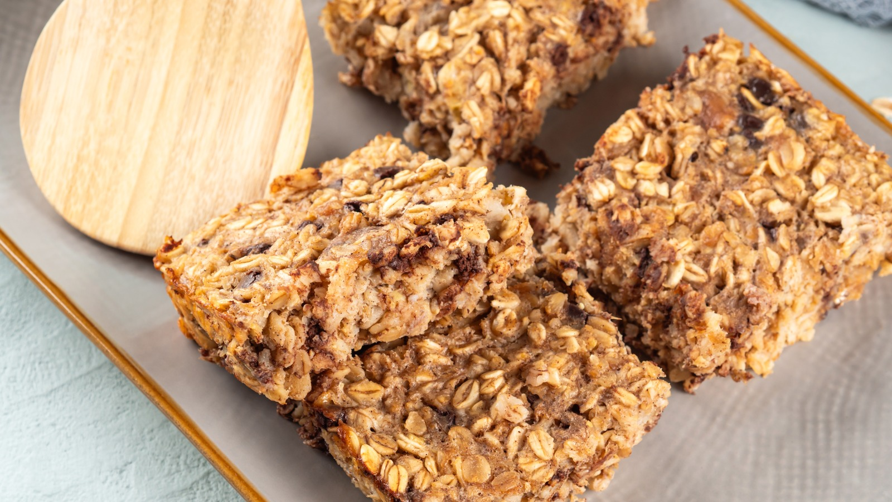

Home
Baked Outmeal Breakfast Bar

Description
A wholesome and satisfying breakfast bar made with hearty oats, warm spices, and just the right touch of sweetness.
Baked until golden and soft in the center, these oatmeal bars are perfect for busy mornings, meal prep, or an easy
grab-and-go snack.
Ingredients
- 2 cups old-fasioned rolled oats
- 1/3 cup packed brown sugar
- 1 tablespoon white sugar
- 1 1/2 teaspoons baking powder
- 1/2 teaspoon salt
- 1/2 teaspoon ground cinnamon
- 1 cup milk
- 2 large eggs
- 2 tablespoons canola oil
- 1 teaspoon vanilla extract
Steps
- Gather all ingredients.
- Preheat the oven to 175 degrees Celcius. Grease an 8-inch square pan.
- Combine oats, brown sugar, white sugar, baking powder, salt, and cinnamon in a bowl.
- Whisk milk, eggs, canola oil, and vanilla extract together in a seperate bowl.
- Stir egg mixture into oat mixture until well combined; set aside until flavours blend, about 20 minutes.
- Spread oat mixture into the prepared pan.
- Bake in the preheated oven until edges are golden brown, about 30 minutes.
- Cool completely before cutting into 16 bars.